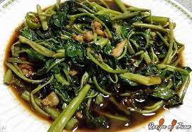
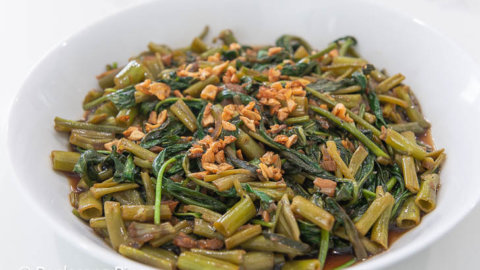

Adobong Kangkong


This is a recipe for adobong kangkong.
It is a Filipino vegetable dish wherein
the water spinach is cooked inadobo style.
Ingredients
- 1 bunch kangkong leaves and stalks separated
- 1 piece onion chopped
- 1 head garlic crushed and chopped
- 1/4 cup soy sauce
- 1/8 cup vinegar
- 1/2 cup water optional
- 3 tablespoons cooking oil
- Ground black pepper
Procedure
- Heat oil in a pan.
- Add the garlic. Saute until the color
turns golden brown. Scoop-out a quarter of the
browned garlic and put in a clean bowl. Save this later for garnish.
- Add chopped onion. Saute until it softens.
- Pour the soy sauce and vinegar in the pan. Let the liquid boil.
- Add the Kangkong stalks. Cook for 2 minutes.
- Add the Kangkong leaves. Stir. Continue cooking for 30 to 1 minute. Cover the pan and cook for 1 minute.
- Season with ground black pepper. Note: you may also add salt if needed.
- Transfer to a serving bowl and then top with browned garlic.
- Serve. Share and enjoy!
Click To Return